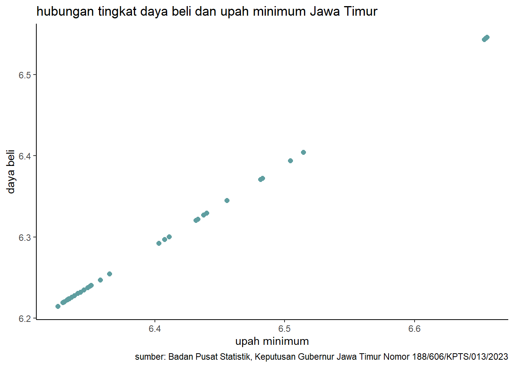

library(tidyverse)
library(readxl)
library(writexl)
library(dplyr)
library(kableExtra)Pengaruh Upah Minimum terhadap daya beli di Provinsi Jawa Timur
Metode Penelitian Politeknik APP Jakarta

1 Pendahuluan
1.1 Latar belakang
Provinsi Jawa Timur adalah salah satu provinsi terbesar di Indonesia, baik dari segi luas wilayah, jumlah penduduk, maupun perekonomian. Pada tahun 2023, Provinsi Jawa Timur mencatatkan pertumbuhan ekonomi sebesar 4,95% (yoy), lebih tinggi dari pertumbuhan ekonomi nasional sebesar 4,4% (yoy). Namun, provinsi Jawa Timur juga menghadapi tantangan dalam hal ketimpangan sosial, ketenagakerjaan, dan kemiskinan.
Salah satu isu yang relevan dengan kondisi perekonomian dan kesejahteraan masyarakat di Provinsi Jawa Timur adalah upah minimum. Pada tahun 2023, Gubernur Jawa Timur menetapkan upah minimum provinsi (UMP) sebesar Rp 2.040.244,30, naik 7,8% dari tahun sebelumnya. Selain itu, terdapat perbedaan upah minimum kabupaten/kota (UMK) di 38 kabupaten/kota di Provinsi Jawa Timur, yang berkisar antara Rp 2.114.335,27 hingga Rp 4.525.479,19. Penetapan upah minimum ini tentu berdampak pada daya beli masyarakat di Provinsi Jawa Timur, baik secara positif maupun negatif.
Berdasarkan uraian di atas, maka penelitian ini bertujuan untuk menganalisis pengaruh upah minimum terhadap daya beli di Provinsi Jawa Timur. Penelitian ini diharapkan dapat memberikan kontribusi bagi pengembangan ilmu ekonomi, khususnya mengenai dampak upah minimum terhadap perekonomian daerah. Selain itu, penelitian ini juga diharapkan dapat memberikan masukan bagi pemerintah, pekerja, dan pengusaha dalam menentukan kebijakan upah minimum yang adil dan efisien.
1.2 Ruang lingkup
Ada dua variabel yang digunakan sebagai objek penelitian, yaitu daya beli dan upah minimum kota dan kabupaten Jawa Timur. Dalam penelitian ini peneliti menggunakan Badan Pusat Statistik (BPS) untuk mendapatkan data daya beli di Provinsi Jawa Timur tahun 2023, selain itu data dari upah minimum Provinsi Jawa Timur tahun 2023 diambil dari “Keputusan Gubernur Jawa Timur Nomor 188/606/KPTS/013/2022”.
1.3 Rumusan masalah
Apakah upah minimum mempengaruhi daya beli di provinsi jawa timur?
Bagaimana hubungan antara upah minimum dan daya beli di Provinsi Jawa Timur?
1.4 Tujuan dan manfaat penelitian
Mengidentifikasi efek dari kenaikan upah minimum terhadap daya beli masyarakat dan perekonomian di wilayah tersebut adalah tujuan utama dari penelitian ini. Penelitian ini dapat membantu pemerintah dan masyarakat dalam merumuskan kebijakan yang tepat terkait upah minimum dan daya beli. Selain itu, penelitian ini juga dapat membantu dalam memperbaiki kondisi ekonomi di Provinsi Jawa Timur dengan meningkatkan daya beli masyarakat dan mengurangi kemiskinan.
1.5 Package
Packages yang digunakan antara lain sebagai berikut:
2 Studi pustaka
Upah Minimum
Upah minimum adalah standar penghasilan minimum yang harus diterima oleh pekerja untuk memenuhi kebutuhan hidup yang layak. Upah minimum bertujuan untuk melindungi pekerja dari eksploitasi dan kemiskinan, serta meningkatkan kesejahteraan dan produktivitas pekerja. Namun, upah minimum dapat juga memberikan dampak negatif kepada perekonomian, seperti menimbulkan pengangguran, inflasi, dan penurunan daya saing. Upah minimum ini ditetapkan berdasarkan kondisi ekonomi dan ketenagakerjaan yang menggunakan data dari Badan Pusat Statistik (BPS). Sejak UU Cipta Kerja terbit, penetapan upah minimum menggunakan formula yang mempertimbangkan variable pertumbuhan ekonomi, inflasi, dan indeks tertentu. Gubrenur wajib menetapkan upah minimum provinsi (UMP) dan dapat menetapkan upah minimum kabupaten/kota (UMK) jika hasil perhitungan UMK lebih tinggi daripada UMP.
Daya Beli
Daya beli adalah kemampuan masyarakat untuk membeli barang dan jasa dengan pendapatan yang dihasilkannya. Daya beli sendiri dipengaruhi oleh beberapa factor, seperti tingkat harga, pendapatan, pajak, tabungan, dan kredit. Daya beli berpengaruh terhadap pertumbuhan ekonomi, karena semakin tinggi daya beli masyarakat, semakin tinggi pula permintaan dan konsumsi barang dan jasa yang akan mendorong produksi dan investasi. Dalam meningkatkan daya beli masyarakat diperlukan peran dari pemerintah dan sector swasta. Beberapa upaya yang dapat dilakukan dalam meningkatkan daya beli masyarakat, seperti menjaga stabilitas harga dan jasa, meningkatkan pendapatan masyarakat, memberikan insentif fiscal dan moneter untuk mendorong konsumsi dan investasi, meningkatkan akses masyarakat terhadap pendidikan, kesehatan, dan infrastruktur, serta mendorong diversifikasi ekonomi dan investasi asing.
3 Metode penelitian
3.1 Data
| Kabupaten/Kota | Upah.Minimum(Rp) | Tingkat Daya Beli(Rp) | x | y | |
|---|---|---|---|---|---|
| 1 | Kota Surabaya | 4.525.479,19 | 3.517.000,00 | 6,655664572 | 6,546172368 |
| 2 | Kabupaten Gresik | 4.522.030,51 | 3.513.000,00 | 6,655333488 | 6,54567815 |
| 3 | Kabupaten Sidoarjo | 4.518.581,85 | 3.509.000,00 | 6,655002154 | 6,545183368 |
| 4 | Kabupaten Pasuruan | 4.515.133,19 | 3.506.000,00 | 6,654670566 | 6,544811912 |
| 5 | Kabupaten Mojokerto | 4.504.787,17 | 3.495.000,00 | 6,653674277 | 6,54344718 |
| 6 | Kabupaten Malang | 3.268.275,36 | 2.538.000,00 | 6,51431864 | 6,404491618 |
| 7 | Kota Malang | 3.194.143,98 | 2.478.000,00 | 6,504354489 | 6,394101302 |
| 8 | Kota Pasuruan | 3.038.837,64 | 2.358.000,00 | 6,482707497 | 6,372543801 |
| 9 | Kota Batu | 3.030.367,09 | 2.350.000,00 | 6,481495241 | 6,371067862 |
| 10 | Kabupaten Jombang | 2.854.095,88 | 2.214.000,00 | 6,455468559 | 6,345177617 |
| 11 | Kabupaten Probolinggo | 2.753.265,95 | 2.136.000,00 | 6,439848164 | 6,329601248 |
| 12 | Kabupaten Tuban | 2.739.224,88 | 2.124.000,00 | 6,437627688 | 6,327154512 |
| 13 | Kota Mojokerto | 2.710.452,36 | 2.100.000,00 | 6,433041778 | 6,322219295 |
| 14 | Kabupaten Lamongan | 2.701.977,27 | 2.093.000,00 | 6,431681691 | 6,320769228 |
| 15 | Kota Probolinggo | 2.576.240,63 | 1.998.000,00 | 6,410986425 | 6,300595484 |
| 16 | Kabupaten Jember | 2.555.662,91 | 1.981.000,00 | 6,40750357 | 6,296884476 |
| 17 | Kabupaten Banyuwangi | 2.528.899,12 | 1.960.000,00 | 6,402931505 | 6,292256071 |
| 18 | Kota Kediri | 2.318.116,63 | 1.797.000,00 | 6,365135283 | 6,254548077 |
| 19 | Kabupaten Bojonegoro | 2.279.568,07 | 1.767.000,00 | 6,357852565 | 6,24723655 |
| 20 | Kabupaten Kediri | 2.243.422,93 | 1.740.000,00 | 6,350911154 | 6,240549248 |
| 21 | Kota Blitar | 2.239.024,44 | 1.737.000,00 | 6,350058834 | 6,239799818 |
| 22 | Kabupaten Tulungagung | 2.229.358,67 | 1.729.000,00 | 6,348179945 | 6,237794993 |
| 23 | Kabupaten Blitar | 2.215.071,18 | 1.718.000,00 | 6,345387687 | 6,235023159 |
| 24 | Kabupaten Lumajang | 2.200.607,20 | 1.707.000,00 | 6,34254253 | 6,232233521 |
| 25 | Kota Madiun | 2.190.216,37 | 1.700.000,00 | 6,340487021 | 6,230448921 |
| 26 | Kabupaten Sumenep | 2.176.819,94 | 1.689.000,00 | 6,337822507 | 6,22762965 |
| 27 | Kabupaten Nganjuk | 2.167.007,05 | 1.682.000,00 | 6,335860324 | 6,225825991 |
| 28 | Kabupaten Ngawi | 2.158.844,59 | 1.676.000,00 | 6,33422138 | 6,224274014 |
| 29 | Kabupaten Pacitan | 2.157.270,25 | 1.675.000,00 | 6,333904554 | 6,224014811 |
| 30 | Kabupaten Bondowoso | 2.154.504,13 | 1.673.000,00 | 6,333347331 | 6,223495941 |
| 31 | Kabupaten Madiun | 2.154.251,34 | 1.673.000,00 | 6,333296372 | 6,223495941 |
| 32 | Kabupaten Magetan | 2.153.062,37 | 1.672.000,00 | 6,333056611 | 6,223236273 |
| 33 | Kabupaten Bangkalan | 2.152.450,83 | 1.671.000,00 | 6,332933239 | 6,22297645 |
| 34 | Kabupaten Ponorogo | 2.149.709,45 | 1.669.000,00 | 6,332379766 | 6,222456337 |
| 35 | Kabupaten Trenggalek | 2.139.426,01 | 1.661.000,00 | 6,330297271 | 6,220369632 |
| 36 | Kabupaten Situbondo | 2.137.025,85 | 1.659.000,00 | 6,329809776 | 6,219846386 |
| 37 | Kabupaten Pamekasan | 2.133.655,03 | 1.657.000,00 | 6,329124204 | 6,219322508 |
| 38 | Kabupaten Sampang | 2.114.335,27 | 1.640.000,00 | 6,325173854 | 6,214843848 |
Data yang digunakan berupa data upah minimum dan tingkat daya beli kota dan kabupaten di Jawa Timur tahun 2023. Kemudian data diolah dengan melakukan log pada kedua variabel, sehingga menghasilkan variabel x sebagai upah minimum dan variabel y sebagai tingkat daya beli. Data-data inilah yang nantinya akan digunakan sebagai objek dalam penelitian ini.
library(readxl)
alika<-read_excel("C:/metodologipenelitian/dataalika/alika.xlsx")
head(alika)# A tibble: 6 × 5
`Kabupaten/Kota` `Upah Minimum (Rp)` `Tingkat Daya Beli (Rp)` x y
<chr> <dbl> <dbl> <dbl> <dbl>
1 Kota Surabaya 4525479. 3517000 6.66 6.55
2 Kabupaten Gresik 4522031. 3513000 6.66 6.55
3 Kabupaten Sidoarjo 4518582. 3509000 6.66 6.55
4 Kabupaten Pasuruan 4515133. 3506000 6.65 6.54
5 Kabupaten Mojokerto 4504787. 3495000 6.65 6.54
6 Kabupaten Malang 3268275. 2538000 6.51 6.40#| label: fig-mpg
#| fig-cap: "Hubungan tingkat daya beli dan upah minimum Jawa Timur tahun 2023"
library("ggplot2")
library("readxl")
library("dplyr")
ggplot(data=alika,aes(x=x,y=y))+
geom_point(color="#5F9EA0",size=2)+
labs(title="hubungan tingkat daya beli dan upah minimum Jawa Timur",
x="upah minimum",
y="daya beli",
caption = "sumber: Badan Pusat Statistik, Keputusan Gubernur Jawa Timur Nomor 188/606/KPTS/013/2023")+
theme_classic()
3.2 Metode analisis
Dalam penelitian pengaruh upah minimum terhadap daya beli di Provinsi Jawa Timur, menerapkan metode regresi univariat. Metode ini digunakan untuk mengetahui hubungan antara satu variabel bebas dan satu variabel terikat. Dengan menggunakan metode regresi univariat, peneliti dapat mengetahui seberapa besar pengaruh upah minimum terhadap daya beli di Provinsi Jawa Timur. Spesifikasi sebagai berikut:
\[ y_{t}=\beta_0 + \beta_1 x_t+\mu_t \] di mana \(y_t\) adalah upah minimum dan \(x_t\) adalah daya beli.
4 Pembahasan
4.1 Pembahasan masalah
Rangkuman hasil:
| Coefficients | Estimate | Std. Error | t value | Pr(> |
|---|---|---|---|---|
| Intercept | -0.1142341 | 0.0032091 | -35.6 | <2e-16 *** |
| x | 1.0006332 | 0.0005001 | 2000.8 | <2e-16 *** |
Hasil dimasukkan ke dalam rumus persamaan dan menghasilkan:
\[ y_{t}=\ -0.1142341 + \ 1.0006332x +\mu_t \]
Dari hasil tersebut, dapat disimpulkan bahwa terdapat hubungan positif antara variabel x dan y. Hal ini dapat dilihat dari nilai koefisien regresi sebesar 1.5467 yang bernilai positif. Maka apabila variabel x (upah minimum) naik satu, akan meningkatkan variabel y (daya beli) sebesar 1.0006332.
4.2 Analisis masalah
Hasil regresi:
library(readxl)
alika<-read_excel("alika.xlsx")
reg<-lm(y~x,data=alika)
summary(reg)
Call:
lm(formula = y ~ x, data = alika)
Residuals:
Min 1Q Median 3Q Max
-7.511e-04 -1.974e-04 -4.032e-05 2.804e-04 5.273e-04
Coefficients:
Estimate Std. Error t value Pr(>|t|)
(Intercept) -0.1142341 0.0032091 -35.6 <2e-16 ***
x 1.0006332 0.0005001 2000.8 <2e-16 ***
---
Signif. codes: 0 '***' 0.001 '**' 0.01 '*' 0.05 '.' 0.1 ' ' 1
Residual standard error: 0.0003322 on 36 degrees of freedom
Multiple R-squared: 1, Adjusted R-squared: 1
F-statistic: 4.003e+06 on 1 and 36 DF, p-value: < 2.2e-16Multiple R-squared adalah 1,yang berarti bahwa 100% variasi variabel y dapat dijelaskan oleh variabel x. Ini menunjukkan bahwa model regresi memiliki kualitas yang sangat baik. Nilai residual standar error adalah 0.0003322, yang berarti bahwa rata-rata selisih antara nilai y yang sebenarnya dan nilai y yang diprediksi oleh model regresi adalah 0.0003322. Ini menunjukkan bahwa model regresi memiliki tingkat akurasi yang sangat tinggi. Nilai F-statistik adalah 4.003e+06 dan nilai p-value adalah < 2.2e-16, yang berarti bahwa variabel x secara signifikan mempengaruhi variabel y.
5 Kesimpulan
hasil dari penelitian ini membuktikan bahwa peningkatan upah minimum dapat meningkatkan daya beli Masyarakat di Provinsi Jawa Timur tahun 2023, hal ini dapat disebabkan karena pekerja akan memiliki lebih banyak uang untuk dibelanjakan. Hal ini dapat meningkatkan permintaan barang dan jasa, sehingga dapat mendorong pertumbuhan ekonomi. Selain itu, peningkatan upah minimum juga dapat meningkatkan kesejahteraan pekerja, karena mereka dapat memenuhi kebutuhan hidup mereka dengan lebih baik.
6 Referensi
Amisa, Y. D., & Waryanto, R. B. D. (2020). PENGARUH UPAH MINIMUM DAN DAYA BELI MASYARAKAT SETIAP PROVINSI TERHADAP KENAIKAN PENGHASILAN TIDAK KENA PAJAK (PTKP) PPH PASAL 21 DI INDONESIA. Majalah Ekonomi, 25(2), 19-27.
Silvia, D., Balafif, M., & Rahmasari, A. (2021). Faktor-Faktor yang Mempengaruhi Tingkat Daya Beli Masyarakat di Kabupaten Sidoarjo. Bharanomics, 2(1), 81-92.
Wihastuti, L., & Rahmatullah, H. (2018). Upah minimum provinsi (UMP) dan penyerapan tenaga kerja di Pulau Jawa. Jurnal Gama Societa, 1(1), 96-102.
Hernaningsih, F. (2018). Pengaruh Kestabilan Inflasi Dan Ketimpangan Pendapatan Terhadap Daya Beli Masyarkat. Jurnal Ilmiah M-Progress, 8(2).
MUZAKI, F. (2018). Pengaruh Pendapatan dan Tingkat Harga Jual Produk Terhadap Daya Beli Masyarakat Muslim (Pada UD Santoso di Klaten Desa Tegalrejo Kec. Rejotangan Kab. Tulungagung).